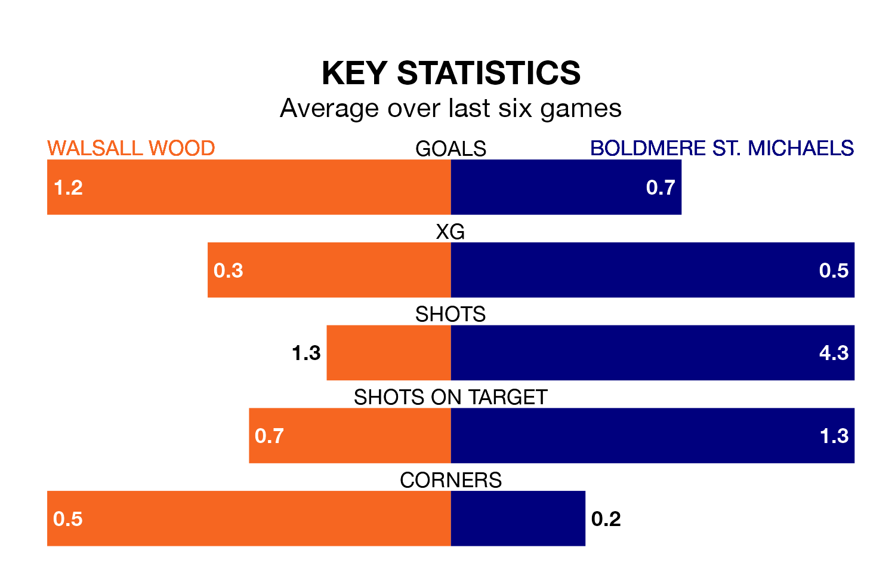

Boldmere St. Michaels come to play Walsall Wood on Saturday in terrible form, having collected just two points from their last six games.
The visitors have drawn two and lost four of their last six fixtures, while Walsall Wood have three wins and two draws.
With 46 goals in 28 games so far this season, Boldmere St. Michaels are scoring more than average in the league with 1.6 goals per game. And they are conceding fewer than average, letting in 40 goals at a rate of 1.4 per game.
Walsall Wood are also above average scorers, with 1.6 goals per game, compared to a league average of 1.5. They have conceded 1.5 goals per game.
In the last five years, Walsall Wood and Boldmere St. Michaels have played each other on four occasions. They won two each.
On average, Walsall Wood scored 1.2 goals and Boldmere St. Michaels 0.5 in those matches.
Their last meeting was on October 10, when Walsall Wood won 2-0 away.
The home team are ninth in the table after 24 games, of which they have won 11 and drawn five, earning 38 points.
The visitors are three places behind Walsall Wood in 12th, with 10 wins and four draws putting them on 34 points.
Walsall Wood's last match was on February 3, a 2-1 loss against Loughborough Dynamo.
Boldmere St. Michaels lost 1-0 against Harborough Town last time out, on February 17.
Updated: 10:08 (UTC), 23/02/24